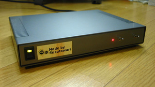
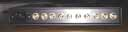
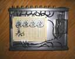

WAFTに頼まれて作った 8chのビデオ信号分配器です。入力が2chあり、前面のスイッチで切替えられる他、 VJなどを始める前に誤って映像が出力されないようにMUTEの機能もついています。 これらのスイッチには安価で恰好も良いトグルスイッチを使いましたが、出っぱりが 大きいく、破損しやすいためフィールドワーク用にはあまり向いていないかもしれません。ビデオアンプにはNisshinbo Micro Devices（旧 New Japan Radio）のNJM2267を、 スイッチにはNJM2244を使用しました。
ｂｙ すすたわり

